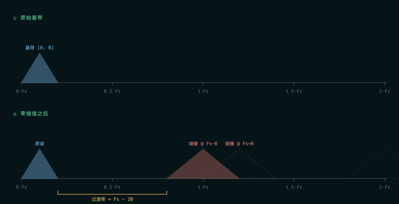
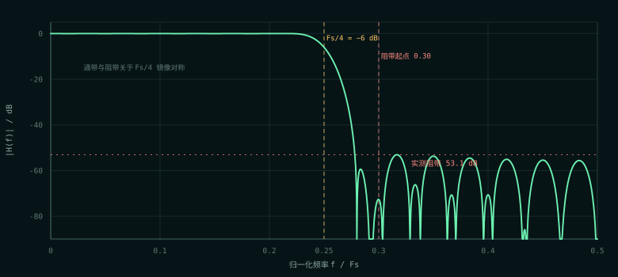
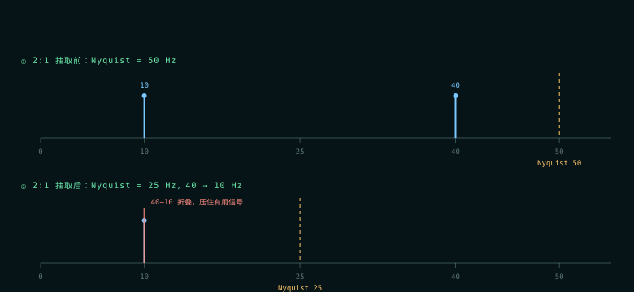
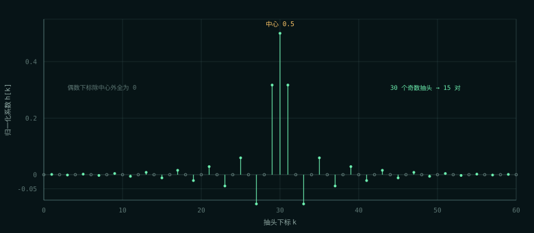

PART ONE · 通信原理
换采样率，先问镜像和混叠
为什么需要重采样
DUC 要把符号率抬到 DAC 的采样率，DDC 要把 ADC 的采样率降到基带处理能接受的程度。升采样叫插值，降采样叫抽取。两者都不是“改一下时钟”那么简单：采样率一变，频谱就会复制或折叠，必须先处理。
- 插值：在样本之间补零，频谱以原采样率为周期复制，多出镜像；必须低通把镜像压掉。
- 抽取：降低采样率，Nyquist 变低；高于新 Nyquist 的分量会折叠到带内，且不可逆；必须先低通。
顺序铁律：插值 = 先插零后滤；抽取 = 先滤后抽。反了就会把镜像或混叠留在信号里。
插值：塞零不是“变密”，是“腾位置”
2× 零插值就是在每两个原始样点之间塞一个 0：
信息量没有变，只是给后续滤波留出了“插值的位置”。频域上，原谱占 [0, B]，零插值后整个频谱以 Fs 为周期复制，在 Fs−B 处出现一份一模一样的镜像。
要滤掉镜像：低通阻带起点必须 ≤ Fs−B，通带终点必须 ≥ B。两者之间就是过渡带，宽度 Fs − 2B。B 越接近 Fs/2，过渡带越窄，滤波器越难做；B 越小，滤波器越轻松。

什么叫“半带”：三条约束推出三件事
半带（halfband）不是“截止频率随便取一半”，而是三条硬约束：
- 中心抽头
h[M] = 0.5——名字里的“半”就来自这里。 - 中心以外所有偶数偏移位置系数为 0——一半的抽头根本不干活。
- 通带与阻带关于
Fs/4镜像对称（幅度互补，δp = δs），即通带边缘 + 阻带起点 =Fs/2。
第三条带来两个后果：
- 过渡带被固定在
Fs/4附近；以高速率Fs归一化，最优的通带边在0.20、阻带起点在0.30，关于0.25 = Fs/4对称。 Fs/4处幅度恰好为0.5（−6 dB）。这是半带的“身份证”，可以在仿真或 ILA 里直接验证。
线性相位要求 N 为奇数（N = 2M+1）；“偶数偏移为 0”又要求 M 为偶数（M = 2q）。两者合成：
群延迟是 30 个高速率样点 = 15 个低速率样点。插值偶相 y_e = x[n−15] 里的 15，就是从这里来的。

多相分解：偶相为什么能直通
把 H(z) 按 2 相拆开：
E(z) ← 偶系数 h[0], h[2], h[4]… O(z) ← 奇系数 h[1], h[3], h[5]…
由半带约束二，偶相只剩中心一项，位置在相内序号 M/2 = 15：
y[2n] = E(z)·x[n] = 0.5·x[n−15] → 补 ×2 后 = x[n−15]
这不是近似，也不是凑巧，是精确成立的等式。偶相不需要任何乘法器，只需要一条深度 15 的延迟线。奇相才是真正的卷积：
注意 z−1 在 O(z²) 前面：奇相相对偶相天然晚 1 拍。抽取公式里的 x_o[n−1−i] 那个 −1 就是从这里来的，不是笔误。
“偶相直通”是 E(z) 只剩一个非零系数的结果。面试被问“偶相为什么可以直通”，答案不是“因为对称”，而是“因为半带约束让偶相除了中心 0.5 以外全为 0”。
抽取：不滤波会发生什么
抽取是插值的逆过程：先低通，再隔点取一个。如果跳过滤波直接 2:1 抽取，高于新 Nyquist 的分量会折叠到带内，而且不可逆。
一个直观例子：采样率 100 Hz，有用信号 10 Hz，带外干扰 40 Hz。直接 2:1 抽取后速率 50 Hz，Nyquist 变成 25 Hz；40 Hz 超出 Nyquist，折叠到 |40 − 50| = 10 Hz，正好压在有用信号上，同频、无法分离。

两个 SHIFT 差的那一位，就是插值的 ×2
零插值后每两点有一个 0，信号平均功率掉一半，所以插值滤波器必须补 ×2 的增益。系数表按 Q1.15 设计（和 = 32768 = 1.0），×2 不用改表，改移位：
抽取：S / 215 → SHIFT = CW − 1 = 15
抽取的输入是真实的、满采样的数据，没有“一半是零”造成的功率损失，所以不需要这个 ×2。用一张表、两个 SHIFT，比“生成两张表（一张是另一张的 2 倍）”更好：只有一份真值，而且差的那一位正好把“为什么插值要补 2 倍”摆在代码里。
PART TWO · FPGA 实现
两个模块，一张系数表
接口：相位并行，不带 valid
好处是不跨时钟域、TB 可以逐拍比对、参考模型最干净。代价是接真实的 1 路 DAC/ADC 时，s05 还要补一级 2:1 并串 / 1:2 串并；只把 DAC 时钟提到 2 倍还不够，仍然需要一个 mux（或 DDR 输出）。这是已知的、有意留给 s05 的一步。
61 个抽头，怎么只剩 15 个乘法器
直接数：61 个抽头里，偶数下标除中心外全为 0 → 31 个位置只有 1 个非零；剩下 30 个奇系数关于中心对称 → 15 对；对称预加后，15 对变成 15 个乘法器。
对比 s03：47 抽头、对称 → 23 对 + 中心 = 24 个乘法器。s04 抽头更多（61 > 47），乘法器反而更少（15 < 24）——这个反差就是半带理论的兑现。

位宽与流水：和 s03 同一套逻辑
| 量 | interp2 | decim2 | 怎么来的 |
|---|---|---|---|
预加和 PA_W | 13 | 13 | 两个 12 位有符号数相加 |
乘积 PROD_W | 29 | 29 | 13 × 16 |
求和 SUM_W | 34 | 34 | 15/16 个乘积相加，+4 位，再留 1 位舍入 |
最终 FINAL_W | 35 | 35 | 加半个 LSB |
输出 OW | 13 | 13 | 单位增益，留 1 位余量 |
四级流水与 s03 相同：dly/e_dly/o_dly → p_reg → gsum（4 组）→ 输出。但插值的端到端延迟不能只看“4 拍”：
y_o的第一个抽头 = 冲激采样沿后 +3；y_e的源是dly[15]，延迟线本身贡献 15 个输入样本，再加 3 级寄存器 → 采样沿后 +18；- ILA 上从触发行算再加 1 拍：
y_o+4、y_e+19。
y_e 走 1 级（dly[15] 直出），y_o 走 4 级。中间那 3 级对齐寄存器一旦漏掉，每个点的数值都对，拼起来却是错的。这是多相设计最常见的坑，也是 TB 专门测“偶相冲激在且仅在第 15 拍”的原因。
0.5 直通项必须在移位之前加
抽取的偶相贡献 0.5·x_e，奇相贡献另一半。这两项必须在同一个移位点之前相加：
如果先各自移位再相加，会丢两次精度、出现两个舍入点，数值就错了。代码里那个 prod_pas（第 16 个“乘积”）就是这一项。
TB 里有一个很漂亮的检查点：只打 x_e 冲激时，2047 × 214 / 215 = 1023.5，正好是舍入 tie，向上取整 = 1024。这一个数字同时证明了：中心抽头是 0.5、214 位置正确、舍入是 round-half-up。
验证：393 个检查点与 7 个完整冲激
| 层 | 手段 | 结果 |
|---|---|---|
| 系数表 | 对称、和 = 16384、A(0)/A(0.25)/A(0.5)、幅度互补、阻带 | 20 个检查点 |
| 插值 | 向量回放 + 偶相冲激 + 奇相 30 点 + 直流 + tie + 饱和 + IW=8 | 45 个检查点 |
| 抽取 | 两路冲激 + 抗混叠 + 直流 + tie + 饱和 | 36 个检查点 |
| 级联 | 插值 → 抽取；43 点响应，峰值 1991 在 k=30 | 24 个检查点 |
| 顶层 | 集成 / 心跳 / 异步复位 | 29 个检查点 |
| 反向验证 | 偶相源错位 / 去掉 x_o 相位偏移 / 0.5 变 0.25 / 两相接反 | 分别 6 / 7 / 14 / 5 条 FAIL |
s04 的五个 TB 共 154 个检查点；当轮全仓库 393 个全绿。反向验证里的 S4 最值得注意：两相接反时，插值那两路波形完全正常，只有级联输出错。如果顶层 TB 只检查 y_o，这个 bug 会静默通过。
上板：三路输出逐位对账
| 信号 | ILA 位置（触发行 = 0） | 期望 |
|---|---|---|
y_e | +19 | 单点 2047，其余 0 |
y_o | +4 … +33 | 30 点，峰值 1298 在 +18/+19 |
y_rt | +17 … +59 | 43 点，峰值 1991 在 +38，关于 38 对称 |
| 窗口 | 8192 点、8 个冲激、周期 1024；CSV 缺 sample 0，实际解析到 7 个完整冲激 | |
| 资源 | 30 DSP（插值 15 + 抽取 15）；WNS 9.311 ns（异步复位 recovery 路径；数据通路 +11.043 ns） | |
| 对账 | 7 个冲激的 y_e / y_o / y_rt 全部与 Python 整数模型逐位一致，0 LSB | |
排障顺序可以背下来：y_e 对 → 复位/冲激/延迟对；y_o 对 → 系数表和流水线对；y_rt 对 → 两相相位 + 位宽衔接对。只有 y_rt 错时，先查 u_decim 的 .x_e/.x_o 有没有接反。
ILA 截图、CSV 逐点表和 s04 的读图口径在 上板展示 · s04 Resampler。注意 y_e 只有一根孤立的 2047，而 y_rt 是 43 点的完整响应。
这一轮踩的三个坑
① 拼接表达式永远是无符号的
抽取的 0.5 直通项第一版写成：
// ❌ {...} 拼接是无符号的，负数输入会变成大正数 wire signed [PROD_W-1:0] prod_pas = {{1{e_dly[K/2][IW-1]}}, e_dly[K/2]} * HALF_COEF; // ✅ 先过一根 signed wire，让符号性靠赋值目标继承 wire signed [IW-1:0] e_tap = e_dly[K/2]; wire signed [PROD_W-1:0] prod_pas = e_tap * HALF_COEF;
症状极有规律：所有正数用例全绿，所有负数用例全红。这和 s03 的 {{1{...}}, xa} 是同一个道理：符号性靠赋值目标继承，拼接本身不带符号。
② 级联的 LAT 是 8，不是 4
tb_resample_top.v 第一版按 LAT=4 去对级联冲激响应，结果整段响应右移 4 拍，5 条断言全红——数值本身是“平移后仍然正确”的。教训：LAT 变了，TB 里的下标偏移也要跟着变；这种错不会让数值错，只会让“位置”错，很容易被当成“设计坏了”查半天。
③ 量化残差给错了抽头
系数生成器第一版把残差给了最外侧的小抽头（30 LSB），残差 −14 打上去变成 16，相对误差 87%。后来改成“先整体缩放让浮点和 = 0.25，残差只剩几个 LSB，再给离中心最近的那一对”，残差现在是 0。
留给 s05 的一步
s04 的接口是相位并行的：插值 1 进 2 出、抽取 2 进 1 出，一路时钟。接真实的 1 路 DAC/ADC 前，DUC 方向要加 2:1 并串，DDC 方向要加 1:2 串并。另外，抽取的 IW 必须等于插值的 OW（13），级联时位宽衔接是硬约束；s05 里 NCO(12) → mixer(13) → interp(13) → … 每一级都要重新规划，这就是“整条链路的增益预算”。
如果只记三件事
- 插值先塞零再滤波；抽取先滤波再扔点。顺序反了，镜像或混叠就留在信号里，而且折叠不可逆。
- 半带让偶相退化成 0.5·z−15，所以 61 个抽头只要 15 个乘法器；偶相直通是精确等式，不是近似。
- 两个 SHIFT 差一位是插值的 ×2：零插值功率掉一半，插值用
CW−2，抽取用CW−1；0.5 直通项必须在移位前加。